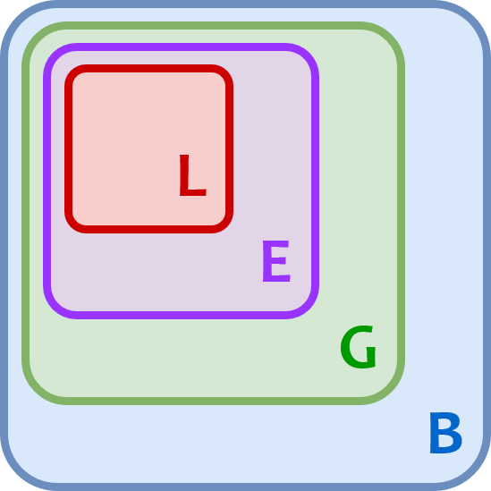

Keyboard shortcuts:
N/СпейсNext Slide
PPrevious Slide
OSlides Overview
ctrl+left clickZoom Element
If you want print version => add '
?print-pdf' at the end of slides URL (remove '#' fragment) and then print.
Like: https://wwwcourses.github.io/...CourseIntro.html?print-pdf
Python for Machine learning - Lecture 2, Part 1
Created for

Iva E. Popova, 2022,

Boolean type
Overview
- Most programming languages define a Boolean type, which represents the truth values of logic and Boolean algebra (named after George Boole).
- The Boolean data type consists of only 2 values:
- True
- False
- Note, that these are not variables names, but values like 0 and 1!
- Boolean values in Python are used mainly in the Conditional Statements. They are the returned value of the Comparison Operators.
>>> print( type(True) )
<class 'bool'>
>>> print( type(False) )
<class 'bool'>
What is True/False in Python?
True/False values for most of the build-in objects:
| Type: | =False | =True |
|---|---|---|
| any numeric type | 0 (zero) | everything else |
| string | "" | any non-empty string |
| sequences and collections | empty | any non empty |
What is True/False in Python - the bool() check
Using the built-in function bool(), we can convert any Python value to True or False
>>> bool(-42)
True
>>> bool(0)
False
>>> bool(0.00001)
True
>>> bool("ada")
True
>>> bool("")
False
Comparison operators
Comparison operators
intro
- With Comparison Operations we can check if 2 or more values are equal or if a value is less than other, and so on.
- The result of a Comparison Operation is True/False
- Comparing objects of different types, except different numeric, will raise a TypeError in Python3! (Can not compare "apples" with "oranges")
>>> 2 < 1
False
>>> 2 < "1"
...
TypeError: '<' not supported between instances of 'int' and 'str
the operators
| Operation | Meaning |
|---|---|
< |
strictly less than |
<= |
less than or equal |
> |
strictly greater than |
>= |
greater than or equal |
== |
equal |
!= |
not equal |
is |
object identity* |
is not |
negated object identity* |
*The identity of an object uniquely identifies where this object is stored in the computer memory.
It will be discussed deeply in the OOP part of the course
examples
>>> i = 5
>>> i < 5
False
>>> i <= 5
True
>>> 9 < 1000
True
>>> "9" < "1000"
False
Note, the last example: "9" < "1000", the result is False, because strings are compared lexicographically.
lexicographical comparison
- Symbols are compared by their position (codepoint) according to the character code table used.
- First the first two items are compared, and if they differ this determines the outcome of the comparison.If they are equal, the next two items are compared, and so on, until either sequence is exhausted.
So, why "9" < "1000" returns False?
- If we use the ASCII Codes Table, we see that the ASCII code point for "9" is 57, and for "1" - 49.
- So, Python compares
57 < 49and as the result is False it returns False for the whole expression - You can get the code point for a one-character string using the built-in
ord()function
Comparison operator Chaining
- Comparison operators in Python can be chained, instead of combining them with logical 'and'
x = 5
# equivalent of: 0<x and x<10:
print(0<x<10)
Logical (Boolean) operators
Logical (Boolean) operators
Overview
- Logical operations are used to combine simple comparison operations into more sophisticated.
- Like "if the user is adult AND the user is from Bulgaria"
| Operation | Name | Result |
|---|---|---|
| x or y | Logical OR | if x is false, then y, else x |
| x and y | Logical AND | if x is false, then x, else y |
| not x | Logical NOT | if x is false, then True, else False |
- where
xandyare expressions - and and or returns one of their operands. I.e. not necessary boolean type.
- not always returns boolean value
| x | y | AND x and y |
OR x or y |
NOT not x |
|---|---|---|---|---|
| T | T | T (y) | T (x) | F |
| T | F | F (y) | T (x) | F |
| F | T | F (x) | T (y) | T |
| F | F | F (x) | F (y) | T |
Legend: T - true; F - false
Examples
>>> True and False
False
>>> 0 and 1
0
>>> 0 or 1
1
>>> 1 or 0
1
>>> not 1
False
>>> not 0
True
More examples
user_name=''
user_age = 15
user_country = 'BG'
print(user_age>18 and user_country=='BG')
print(user_age>18 or user_country=='BG')
# note that the value of logical operations is not always True/False
print(user_name and 'Anonymous' )
print(user_name or '***Anonymous***' )
False
True
***Anonymous***
Control Flow Statements
Control Flow Statements
Overview
- Normal control flow of a Python program defines that statements are executed one after another, as written in code.
- The Control Flow statements allows our program to react in one way, if some condition is True, or in another way, if it's False.
if statement
if statement
Syntax

- Condition can be any expression, which is evaluated to True/False (remember What is True/False in Python )
- In Python, to encompass the statements which forms a block, you do not need to put any braces, but each statement have to be indented with the same amount of spaces!
if condition :
block 1
x = 42
if x % 2 == 0:
print("{} is an even number!".format(x))
example - align matters
if False :
print("1")
print("2")
print("3")
print(1)andprint(2)forms a block, which will be executed, only if the condition is true.- But
print(3)is not in the block, and will be always executed!
if - else statement
Syntax
if condition :
block 1
else :
block 2

example - even/odd number
x = 41
if x % 2 == 0:
print("{} is an EVEN number!".format(x))
else:
print("{} is an ODD number!".format(x))
# OUTPUT
# 41 is an ODD number!
example - hello in BG
user_lang = "bg"
if user_lang == "bg":
print("Здравейте")
else:
print("Hello")
print("-" * 20)
Здравейте
--------------------
if - elif - else statement
Syntax
if c1 :
block 1
elif c2:
block 2
else:
block 3

- We can have more than one elif statement, as shown in next examples!
example - multinational hello
user_lang = "it"
if user_lang == "bg":
print("Здравейте")
elif user_lang == "it":
print("Ciao")
elif user_lang == "en":
print("Hello")
else:
print("I do not speak your language!")
print("-" * 20)
Functions in Python
What are functions?
- A function is a named block of statements (i.e. a sequence of instructions) which perform one conceptual task.
- A typical example for a function in the real life, is a recipe in a cooking book.
- The statements in the function are performed only after the function is called.
- Functions help us to organize our code (break a task into sub-tasks)
def task_1():
pass
def task_2():
pass
...
def task_n():
pass
Function Definition
def function_name(param_list):
'''docstring'''
statements
return [expression]
- def
- A keyword that starts the function definition
- function_name
- Should be valid variable name.
- param_list
- Optional. A list of function parameters. The braces around it are required, even if the list is empty.
- '''docstring'''
- Optional. A string for function documentation.
- statements
- block of statements, also called function body. Must have at least 1 statement.
- return [expression]
- Optional. Specify what the return value of the function should be.
The pass statement
- Sometimes you need to define a function which body will be written later, but Python did not allows empty blocks!
- In such cases, you can use the
passstatement for function body:
def do_task1():
pass
def do_task2():
pass
def do_task3():
pass
You can use the pass statement anywhere in your code, where you need a "do nothing" block!
simplest example
def greet():
"""Just prints hello"""
print("Hello!")
- Note, this code will not print anything if you try to run it as is
- This is just the function's definition
- In order to execute the statements in it, the function should be called!
Function Call (Synonyms: Function Execution; Function Invocation)
- The statements in the body of a function will be executed only when the function is called:
- opt_arg_list is optional, but braces are required
- Note, that the braces after the function name are present!
function_name(opt_arg_list)
### define greet() function
def greet():
"""Just prints hello"""
print("Hello!")
### execute the greet() function:
greet()
- A function must be defined before you call it, or a NameError will be raised!
- function call - the right way:
# execute the greet() function:
greet()
# define greet() function:
def greet():
print("Hello!")
# NameError: name 'greet' is not defined
# define greet() function:
def greet():
print("Hello!")
# execute the greet() function:
greet()
# Hello!
Function Parameters
- A function is not very useful if it operates on same values
- It will be better if we could do:
def add():
print(2+3)
add()
add()
add()
# 5
# 5
# 5
# call add with different arguments:
add(20, 22)
add(123, 321)
add(16, 10)
# DESIRED OUTPUT:
# 42
# 444
# 26
- Parameters are local function variables which get values when the function is called with the respective arguments.
- You can define a function to use parameters by listing them in the braces.
- Parameters names should be valid variable names.
- When you call a function, you list in the braces the respective parameters values (called arguments)

Positional Arguments
- Passing arguments values to parameters can be done by position. In this case, we speak about positional arguments/parameters:
- first parameter gets the value of first argument
- second parameter - the value of second argument
- and so on...

Positional Arguments
- The number of arguments passed must be equal to the number of parameters!
def sub(x,y):
""" subtracts y from x and prints the result """
print(x - y)
sub(99)
# TypeError: sub() missing 1 required positional argument: 'y'
sub(99, 3, 3)
# TypeError: sub() takes 2 positional arguments but 3 were given
Default Parameters Values
- A default value to the "trailing" parameters can be defined, and that value will be used if no argument for that parameter is passed.
def greet(name="Nobody"):
""" greets a user """
print("Hello", name)
greet("Maria")
greet()
# Hello Maria
# Hello Nobody
Default Parameters Values
Default parameters must follow the non-default parameters!
def greet(msg="Hi", name):
print(f"{msg} {name}!")
greet("Maria")
# SyntaxError: non-default argument follows default argument
def greet(name, msg="Hi"):
print(f"{msg} {name}!")
greet("Maria")
# Hi Maria!
Keyword (named) Arguments
- If you explicitly state the parameter name in the argument list, that parameter will get its value, no matter of where it is positioned.
def greet(msg, name):
print(f"{msg} {name}!")
greet(name="Maria", msg="Hi")
Keyword (named) Arguments
Named arguments must follows the positional arguments!
def greet(msg, name):
print(f"{msg} {name}!")
greet(name="Maria", "Hi")
# SyntaxError: positional argument follows keyword argument
Variable Number of Positional Arguments (*args)
- You can define a function to take variable number of arguments if you use the * (star) operator in front a parameter name.
- Thus, the parameter will receive the arguments in a tuple:
def foo(*args):
print(args)
foo(1)
foo(1,2)
foo(1,2,3)
#(1,)
#(1, 2)
#(1, 2, 3)
The name args can be any valid variable name, but its a convention to use *args to denote that it contains the packed arguments
Variable Number of Positional Arguments (*args)
Variable arguments must follow the positional arguments:
def add(p1, *args):
print(p1, end=", ")
print(args)
add(1, 2)
add(1, 2, 3)
add(1, 2, 3, 4)
# 1, (2,)
# 1, (2, 3)
# 1, (2, 3, 4)
Variable Number of Positional Arguments (*args) - Task
- Define the
add_num()function, which will print the sum of variable number of numerical arguments
# add_num() definition
# test your code:
add_num(1)
#should print 1
add_num(1,2)
#should print 3
add_num(1,2,3)
#should print 6
Variable Number of Keyword Arguments (**kwargs)
- You can use
**(double stars) in front of parameter name which will receive a variable number of keyword arguments into a dictionary.
def foo(**kwargs):
print(kwargs)
foo(a=1, b=2)
# {'a': 1, 'b': 2}
Variable Number of Keyword Arguments (**kwargs) - example
def signup(**kwargs):
for k,v in kwargs.items():
print("{} - {}".format(k,v))
signup(user="ada", age=28)
signup(user="ada", age=28, town="london")
Unpacking sequence into positional parameters
- You can unpack a list/tuple passed as argument into listed positional parameters with the
*operator
def my_func(p1,p2,p3):
print(p1, p2, p3)
args = [1,2,3]
my_func(*args)
# 1 2 3
Note, that if you miss the star in my_func(*[1,2,3]), Python will assign the whole list [1,2,3] to p1, and the rest of parameters will receive no value. That will throw an error!
Unpacking dictionary into named arguments
- You can use
**(double stars) to unpack dictionary into named arguments.
def menu_print(fruit, price):
print("{:.<20s}{:.2f}".format(fruit,price))
menu_print(**{
"price": 2.5,
"fruit": "apple"
})
# apple...............2.50
Function Return Values
Function Return Values
return statement
- Functions in Python can return values, using the
returnstatement:
def f():
statements
return [expression]
def add(x,y):
return x+y
print(add(2,4)**2)
# 36
The return statement exit the function! Any code after return will never be executed:
def add(x,y):
return x+y
# next line will never be executed:
print("After return")
print(add(2,4))
Default return value
- If a function did not have an explicit
returnstatement, then the function return value is None.
def foo():
print("foo() was executed!")
def bar():
print("bar() was executed!")
return "End"
print( foo() )
print( bar() )
# OUTPUT:
# foo() was executed!
# None
# bar() was executed!
# End
In Python each function returns a value, being it None!
Scope and Namespaces
Scope and Namespaces
What?
- A namespace stores the mapping from names to objects. Usually implemented internally by a dictionary.
- A scope is a lexical (textual) region of the program, where a namespace is directly accessible (i.e. without a prefix).
- You can think of the scope as part of your program where a variable can be accessed (used, visible).

Local Scope
- Names created inside a function are local to the function and are visible only inside that function
- Function parameters are also defined in local function namespace. I.e. they are local to that function.
def f1():
y = 2
print(f"y = {y} inside f1")
f1()
# y = 2 inside f1
print(f"y = {y} outside f1")
# NameError: name 'y' is not defined
Global Scope
- A name defined outside any functions is global to the file/module, and can be accessed after its definition from any place in that file/module.
x = 10
def foo():
print("x = {} inside foo()".format(x))
foo()
# x = 10 inside foo()
print("x = {} outside foo()".format(x))
# x = 10 outside foo()
Names Resolution
- When a name is assigned a value inside function body, that name is created in function local scope (if the global keyword is not used), even if the same name is already defined in global scope
x = 1
def foo():
x = 99
print(f"x = {x} inside foo")
foo()
# x = 99 inside foo
print(f"x = {x} outside foo")
# x = 1 outside foo
Variables with same name, defined in different scopes are considered as different variables!
Names Resolution - nested functions
def outer():
x=2
def inner():
x = 3
print(f'x = {x} in inner')
inner()
print(f'x = {x} in outer')
x = 1
outer()
print(f'x = {x} in global')
#x = 3 in inner
#x = 2 in outer
#x = 1 in global
the nonlocal statement
- We can declare a name with the
nonlocalstatement prefix - The nonlocal statement causes the listed names to refer to previously bound variables in the nearest enclosing scope excluding globals.
def outer():
x=2
def inner():
nonlocal x
x = 3
print(f'x = {x} in inner')
inner()
print(f'x = {x} in outer')
x = 1
outer()
print(f'x = {x} in global')
#x = 3 in inner
#x = 3 in outer
#x = 1 in global
the global statement
- We can declare a name with the
globalstatement prefix - The
globalstatement causes the listed names to be interpreted as global names.
def outer():
x=2
def inner():
global x
x = 3
print(f'x = {x} in inner')
inner()
print(f'x = {x} in outer')
x = 1
outer()
print(f'x = {x} in global')
#x = 3 in inner
#x = 2 in outer
#x = 3 in global
Names Resolution - rules
Although scopes are determined statically, they are used dynamically. I.e. a name is resolved searching in:
- The local (innermost) scope
- The scopes of any enclosing functions, which are searched starting with the nearest enclosing scope, contains non-local, but also non-global names
- The current module’s global names
- The outermost scope is the namespace containing built-in names

{kind=link}
References
References
- Defining Functions @python.org/3/tutoria
- Functions @python-course.eu
- Namespaces and Scope in Python @realpython
Exercises
Task1: BMI with functions
Task
- Refine the BMI program form the (last lab)
- Ask the user to enter his/her weight_in_kilogram and height_in_meters
- Now, the output of your program should be the BMI category, corresponding to the BMI index (given in next slide)
- Split your logic into functions, and organise your program as given bellow:
def get_user_data():
"""retrieves user data from the command line
Returns:
[dictionary] of the form:
{
"name" : "user_name",
"height": "user heigth in meters",
"weight": "user weight in kilograms"
}
"""
pass
def calc_BMI(w,h):
"""calculates the BMI
Arguments:
w {[float]} -- [weight]
h {[float]} -- [height]
Returns:
[float] -- [calculated BMI = w / (h*h)]
"""
pass
def calc_BMI_category(bmi):
"""Calculates the BMI category
Arguments:
bmi {[float]} -- [the bmi number index]
Returns:
[string] -- [bmi category]
"""
pass
def print_results(bmi_category):
"""[Prints the BMI category to the user ]
Arguments:
bmi_category {[string]} -- []
"""
pass
def cm_to_meters(cm):
"""converts centimetres to meters
Arguments:
cm {[int]}
Returns:
[float]
"""
pass
user_data = get_user_data()
bmi = calc_BMI(user_data["weight"],user_data["height"] )
bmi_category = calc_BMI_category(bmi)
print_results(bmi_category)
Task2: Check user input
- Improve the function
get_user_data()defined in Task1, adding a check for valid user data: - User name must be at least 2 characters long
- User's height must be in the range: [50 - 250]
- User's weight must be in the range: [5 - 300]
- If the user enters wrong data, ask for input again.
- Advanced task: define a separate function for each check (validate_name(), validate_height(), validate_weight()) which will return True if the user input is valid, and False - otherwise.
Exercises
Task: BMI_by_categories.py
- Refine the BMI program form the (last lab)
- Ask the user to enter his/her weight_in_kilogram and height_in_meters
- Now, the output of your program should be the BMI category, corresponding to the BMI index (given in next slide)
BMI Categories
| BMI | Category |
|---|---|
| <= 18.5 | Underweight |
| 18.5–24.9 | Normal |
| 25–29.9 | Overweight |
| >= 30 | Obesity |
Task: guess_the_number.py
- Write a simple Python program, implementing the "Guess the number" game, following the rules:
- The program will "think" of a number using the
random module, as shown in next slide. - You have to implement now only the first user move:
- Prompt the user for his/her guess
- If the user guess is equal to the machine number => print out a congratulation message!
- If the user guess is less than the machine number => print out "your guess is less than my number. Try again!"
- If the user guess is greater than the machine number => print out "your guess is greater than my number. Try again!"
How to generate "machine_number"
from random import randint
machine_number = randint(1,10)
print("machine_number={}".format(machine_number))
### your code goes bellow: